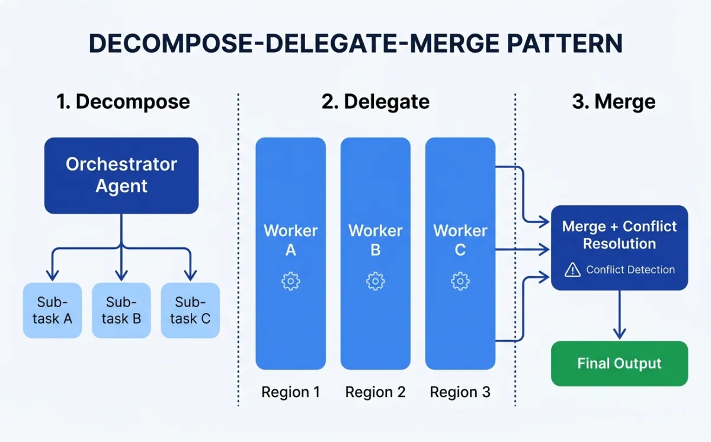
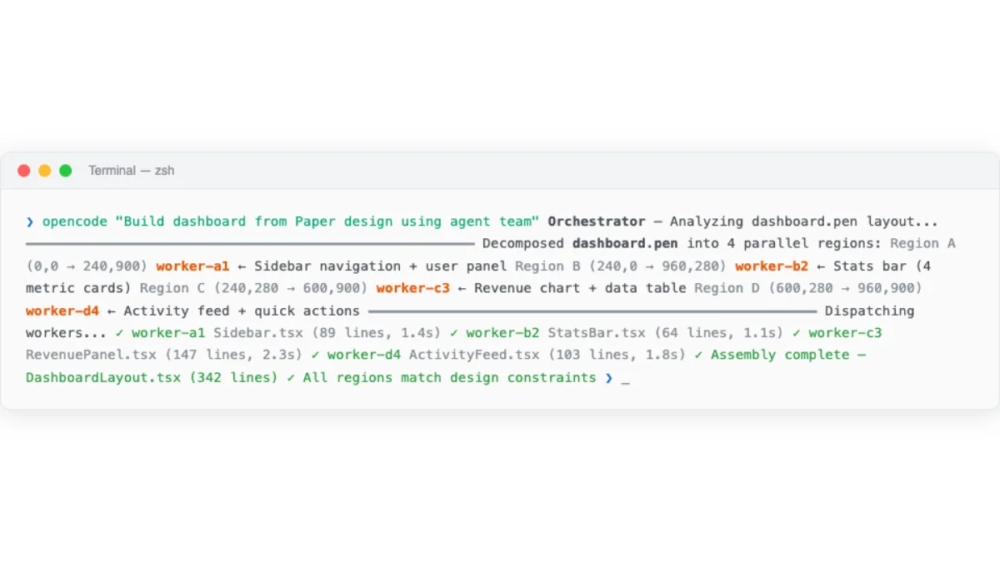
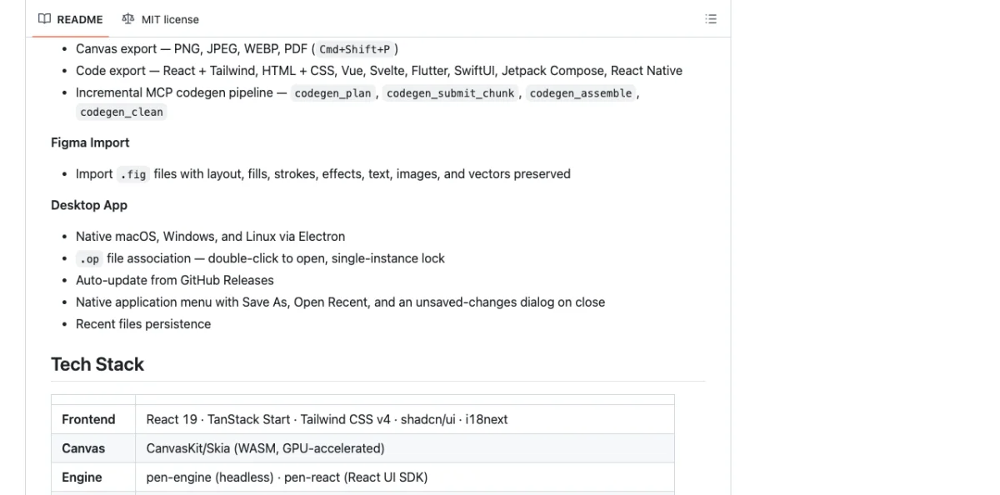
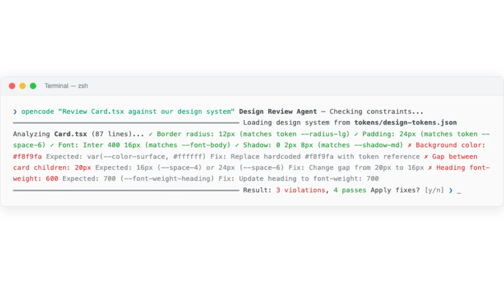

From Single Agent to Design Team
A single agent handles a design task sequentially. It reads the brief, loads the context, generates the output, and iterates. This works for small, focused tasks: a single component, a landing page hero section, a set of design tokens.
Multi-agent means multiple agents working in parallel on different parts of the same design. This mirrors how human design teams already work. A UX researcher handles user flows. A visual designer handles the high-fidelity mockup. A motion designer handles animations. An engineer handles production code. Different people, different skills, one output.
The shift from single to multi-agent is triggered by three conditions: the task is large enough that sequential execution is too slow, the task has independent sub-parts that can run in parallel, or the task requires multiple skill sets that exceed what fits in a single context window.
Three decomposition patterns emerge from real-world agentic design work.
Spatial decomposition. Divide the canvas into regions. One agent handles the header. Another handles the sidebar. A third handles the main content area. This is the most common pattern for dashboard and multi-section page designs.
Functional decomposition. Divide by skill type. One agent handles layout structure. Another handles typography and copy. A third handles animation and interaction. This pattern shows up in video production (Chapter 09) and complex interactive prototypes.
Pipeline decomposition. Divide by stage. One agent researches and wireframes. A second agent converts wireframes to high-fidelity design. A third agent converts design to production code. Each stage feeds into the next. This pattern is inherently sequential but allows specialization at each stage.
| Pattern | How It Splits | Best For | Parallelism | Merge Difficulty |
|---|---|---|---|---|
| Spatial | Canvas regions | Dashboard, multi-section pages | Full parallel | Medium (alignment, spacing) |
| Functional | Skill domains | Interactive prototypes, video | Mostly parallel | High (style consistency) |
| Pipeline | Workflow stages | Full site builds, design systems | Sequential stages | Low (stage outputs are inputs) |
The Orchestrator Pattern: Decompose, Delegate, Merge
The orchestrator pattern is the backbone of multi-agent design. A single agent --- the orchestrator --- takes the design brief, breaks it into sub-tasks, assigns each sub-task to a worker agent, and merges the results.


Three phases.
Decompose. The orchestrator analyzes the brief. It identifies independent sub-tasks, defines boundaries between them, and specifies the interface where they will connect. For a dashboard design, the decomposer decides where the header ends and the sidebar begins, and what shared constraints (colors, spacing, typography) apply to all regions.
Delegate. Each sub-task gets assigned to a worker agent with specific context, constraints, and acceptance criteria. The worker agent receives the design system, its region boundaries, and any cross-region dependencies. It does not see the full brief --- only its slice.
Merge. The orchestrator collects outputs from all worker agents. It resolves conflicts: overlapping elements, inconsistent spacing, style mismatches. The merge step is where multi-agent design either succeeds or falls apart.
The merge step is the hard part. Merging requires understanding spatial relationships, resolving style conflicts, and ensuring visual consistency across regions that were designed independently. This is where the orchestrator pattern differs from simply concatenating independent outputs. The orchestrator has to do the work of a creative director: seeing the whole, identifying inconsistencies, and making corrections.
The orchestrator pattern appears in three places in the agentic design ecosystem.
OpenPencil's Agent Teams use spatial decomposition with a built-in orchestrator that manages canvas regions. Subagent-driven development uses functional or spatial decomposition with the parent agent as orchestrator. MCP chaining (covered in section 10.7) uses pipeline decomposition where the agent sequences tool calls across multiple MCP servers.
My take: The orchestrator pattern is the right mental model for multi-agent design, but the merge step is where current tools are weakest. An orchestrator can decompose and delegate reliably. Merging spatial outputs with visual consistency is still an unsolved problem in most tooling. OpenPencil's concurrent Agent Teams are the closest to solving this, but even they require human review after merge.
OpenPencil's Concurrent Agent Teams in Practice
OpenPencil (3k+ GitHub stars as of May 2026) is the first open-source AI-native vector design tool with built-in concurrent Agent Teams. Multiple agents can work on different regions of the same canvas simultaneously.

The architecture is straightforward. The canvas is divided into regions. Each agent is assigned a region with specific constraints: position, size, design system tokens, and task description. Agents work independently. Results are merged back into a single coherent design. Conflict resolution handles overlapping elements.
The .op file format supports concurrent reads and writes from multiple agents. This is a technical requirement that most design file formats do not handle. Standard file formats assume a single writer. OpenPencil's format assumes multiple writers and includes conflict resolution semantics.
The built-in MCP server exposes canvas operations as tools for external agent control. This means the concurrent agents can be any agent platform --- Claude Code, Codex, OpenCode --- not just OpenPencil's internal agent. The MCP server provides the coordination layer.
Practical use cases for concurrent Agent Teams.
Dashboard design. One agent builds the sidebar navigation. Another builds the header with search and user menu. A third builds the main content area with stats cards and charts. Each agent works on its region independently. The orchestrator merges them into a coherent dashboard.
Multi-page documents. Each agent handles a different page or section. One agent designs the cover page. Another designs the table of contents. A third designs the body content pages. This is spatial decomposition applied across pages rather than within a single page.
Component libraries. Agents work on different component variants in parallel. One agent builds button variants. Another builds form input variants. A third builds card variants. Each agent applies the same design system tokens, ensuring consistency without coordination overhead.
Subagent-Driven Development for Design Tasks
Subagent-driven development is the pattern where a parent agent spawns child agents to handle independent tasks in parallel. Applied to design, the parent receives the brief (for example, "build a marketing site"), decomposes it into sections (hero, features, testimonials, footer), and assigns each section to a subagent.

Each subagent executes independently with its own context window. The subagent loads only the skills and design system context it needs. This is an advantage over a single agent that must load everything into one context window. For a marketing site with a hero section, a features grid, a testimonials carousel, and a footer, each subagent gets the brand guidelines plus its specific section requirements.
The parent agent enforces global constraints: brand colors, typography scale, spacing system, component library. Subagents cannot override these. This is how the parent ensures consistency across parallel outputs without coordinating during execution.
The pattern has clear benefits. Parallel execution reduces wall-clock time. Specialization lets each subagent load only relevant context. Isolation means a failure in one subagent does not block others. Consistency is enforced at the parent level through shared constraints.
The pattern also has costs. Each subagent needs its own context, multiplying token usage. Merging outputs can introduce inconsistencies that the parent must resolve. Debugging is harder because the trace is distributed across multiple agents. And the total token cost is higher than a single agent handling the same task sequentially.
My take: Subagent-driven development shines for large designs with clearly separable sections. I use it for full-page builds where each section is visually independent. For anything smaller --- a single component, a design token update, a visual refinement --- single agent is faster and cheaper. The emerging best practice is correct: start single-agent, escalate to multi-agent only when the task clearly exceeds single-agent capacity.
Orchestration Strategies: When to Parallelize
The decision to parallelize is not binary. It depends on task size, interdependence between sections, time constraints, and token budget. The following table provides a decision framework.
| Factor | Single Agent | Multi-Agent |
|---|---|---|
| Task size | Small, focused (single component, single page) | Large, multi-section (full site, dashboard, component library) |
| Interdependence | High (sections visually affect each other) | Low (sections are visually independent) |
| Time sensitivity | Not urgent | Deadline-driven, parallelism saves meaningful time |
| Context window | Fits in single context window | Exceeds single context window |
| Skill diversity | One skill set sufficient | Multiple skill sets needed (layout + animation + export) |
| Token budget | Limited | Generous |
| Debugging needs | Need clear, linear trace | Can tolerate distributed trace |
Practical thresholds based on experience.
Always single-agent: a single component, a single page, design token updates, small edits to an existing design.
Consider multi-agent: a full page with four or more distinct sections, a component library with ten or more components.
Strongly multi-agent: a multi-page site, a dashboard with six or more widget types, a design system with fifty or more tokens.
Four orchestration strategies exist.
Fixed decomposition. Pre-define how the task splits before agents start. Region-based or component-based. The orchestrator follows a fixed plan. Predictable, testable, but inflexible.
Dynamic decomposition. Let the orchestrator analyze the task and decide the split at runtime. More flexible, but the decomposition quality depends on the orchestrator's judgment. Works best with strong design system context in the orchestrator's prompt.
Hybrid. Fixed high-level structure, dynamic low-level splitting. The orchestrator pre-defines the major sections but lets worker agents decide how to split their own sections. This is the most practical strategy for complex designs.
Pipeline. Agents in sequence, each specializing in one stage. Wireframe to visual to code. Each stage's output is the next stage's input. Not parallel, but allows deep specialization at each stage.
Context management is the critical challenge across all strategies. Each subagent needs design system context: brand colors, typography, spacing. This context must be communicated without duplication. Shared CLAUDE.md or AGENTS.md files (covered in Chapter 03) solve this by providing a single source of truth that all agents read from.
The Complexity Tax: When Single Agent Wins
Multi-agent introduces overhead that is easy to underestimate. I call this the complexity tax, and it has five components.
Orchestration cost. Tokens spent on decomposition instructions and merge instructions. The orchestrator has to explain the task to each worker, define boundaries, and then parse and merge the results. These are tokens not spent on actual design work.
Context duplication. Each agent needs baseline design system context. If the brand guidelines are 500 tokens and you run four agents, you spend 2000 tokens on context that a single agent would have loaded once.
Merge failures. Inconsistent spacing between sections designed by different agents. Misaligned elements at region boundaries. Conflicting style decisions. These failures require human review and manual fixes, negating the time saved by parallelism.
Debugging difficulty. When the merged output has an alignment issue, which agent caused it? Distributed execution means distributed blame. Tracing a visual bug back to a specific agent's output is harder than debugging a single agent's sequential work.
Coordination latency. Time spent waiting for all agents to complete. The slowest agent determines the wall-clock time. If one agent is slow (a complex section, a larger context), the parallelism benefit shrinks.
Single agent has clear advantages in these scenarios.
| Scenario | Why Single Agent Wins |
|---|---|
| Single component or page | Task fits in one context window, no decomposition needed |
| Visual refinements across the whole design | Requires seeing the whole picture, holistic judgment |
| Well-defined design system | Context fits in one window, system constraints reduce variance |
| Prototyping with fast iteration | Speed of iteration matters more than speed of generation |
| Token-sensitive workflows | Single agent uses fewer total tokens |
The emerging best practice is simple: start single-agent. Escalate to multi-agent only when the task clearly exceeds single-agent capacity. This is not a cop-out. It is a recognition that multi-agent complexity is real and the benefits are not always worth the cost.
My take: A poorly orchestrated multi-agent team can be slower and produce worse results than a single well-prompted agent. I have seen this play out multiple times. The enthusiasm for parallelism is understandable, but the merge step is where multi-agent design fails in practice. Until tooling gets better at resolving cross-region inconsistencies automatically, treat multi-agent as an optimization for large, well-bounded tasks, not a default approach.
Next: Whether one agent or many, the output eventually needs to become production code. Chapter 12 walks through the complete pipeline from design artifact to production-ready UI, covering code export from Paper, Pencil, and OpenPencil, responsive breakpoints, accessibility enforcement, and the review-and-iterate loop.